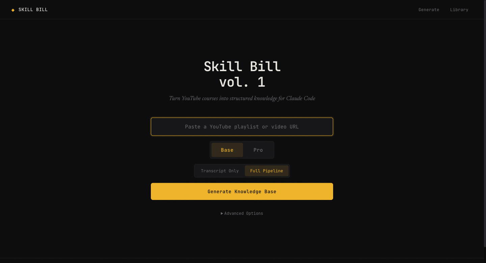
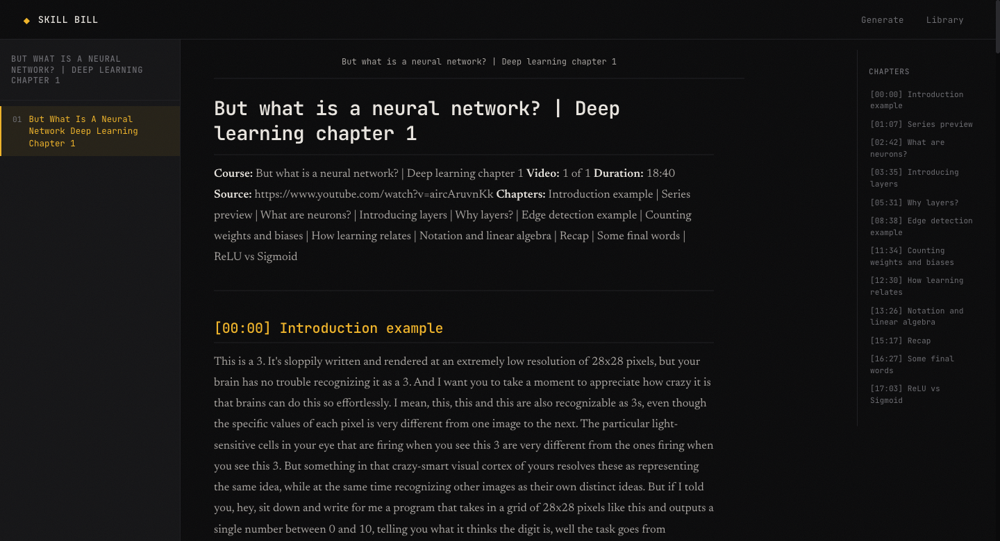
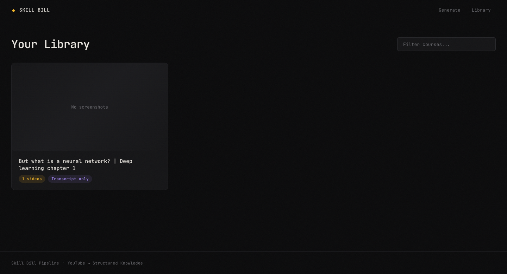

YouTube → Claude Code
Good technical content lives in video, which is the worst possible format for an agent to read.
Skill Bill takes a playlist URL and hands back a chapter-indexed knowledge base — transcripts, screenshots captured where they matter, and a SKILL.md that tells Claude Code when to reach for it.
A twelve-part course is three hours you have to sit through, and none of it is greppable. The information an agent needs is in there — buried in narration, split across chapters, and often shown on screen rather than said out loud.
So the pipeline pulls all three. Transcripts give the words. Chapter markers give the structure. Frame extraction gives the parts that were only ever drawn, typed, or pointed at.
What comes out is markdown an agent can navigate the way a person navigates a table of contents — index first, one lesson at a time, jump by heading.
Sampling a video on a fixed interval gets you four hundred near-identical frames of somebody's face.
— why stage 05 exists
Dedup thresholds vary by what's on screen. A code-demo segment is strict — a two-character diff between frames is a real change worth keeping. A talking-head segment is loose, because the face doesn't change and neither does the information.
That single decision is the difference between a knowledge base with forty useful images and one with four hundred useless ones.
A local web UI, or a CLI if you'd rather not look at anything. Stages stream over a WebSocket as they run.



The packager writes the frontmatter — a description built from the course's actual topics, plus explicit routing rules: read the index first, load one lesson at a time, navigate by chapter heading instead of swallowing whole transcripts.
Unzip it into ~/.claude/skills/ and it's live.
SKILL.md
--- name: neural-networks-deep-learning description: > Reference knowledge base from Neural Networks (4 videos) covering back- propagation, gradient descent… Use when user asks about these topics or asks "what does the course say about [topic]?" metadata: author: Skill Bill version: "1.0" source: youtube-playlist ---
| Base | Pro | |
|---|---|---|
| transcripts | yes | yes |
| screenshots | local heuristics | filtered, vision-captioned |
| lesson steps | raw transcript | extracted, numbered |
| topic index | — | topics.json |
| api key | none | ANTHROPIC_API_KEY |
| rough cost | free | ~$0.15–0.20 / video |
Cost figures are estimates from development runs, not guarantees.